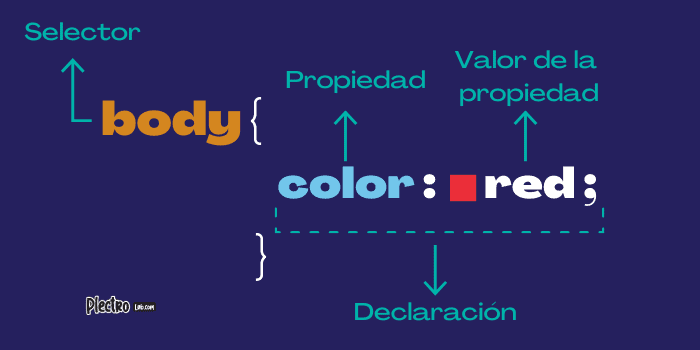

La palabra inglesa “framework” define, en términos generales, un conjunto estandarizado de conceptos, prácticas y criterios para enfocar un tipo de problemática particular, que sirve como referencia para enfrentar y resolver nuevos problemas de índole similar.
¿Que es Frameworks CSS?
Un framework para aplicaciones web es un framework diseñado para apoyar el desarrollo de sitios web dinámicos, aplicaciones web y servicios web. el objetivo de un framework CSS será ahorrarnos realizar las tareas básicas al trabajar con hojas de estilo.
Normalmente los frameworks CSS se componen de uno o varios archivos con declaraciones predefinidas que incluyen:

Reset (reset.css): Resetear los estilos al empezar a trabajar la maquetación de una página, nos permitirá homogeneinzar, a priori, las posibles diferencias de visualización entre navegadores, unificando las propiedades básicas de los elementos: margin, padding, font, border, etc.
Tipografías (text.css): Una gestión genérica de las tipografías que se usarán en la página. De nuevo, no sólo se trata de aplicar un uso inteligente de fuentes y tamaños, si no de unos altos de línea, margin, padding, font-size, line-height, etc, que ayuden a mantener un correcto ritmo vertical en la página.
Layout (grid.css): Una parte de los frameworks va dirigida a una de las tareas más arduas a la hora de maquetar cualquier diseño: conseguir un determinado layout, más o menos complejo, que sea, además de óptimo, “cross-browser”, compatible con todos los navegadores. Suelen disponer de múltiples opciones combinables para conseguir layouts complejos: múltiples columnas, anchos fijos, elásticos y líquidos.
Style (style.css): Estilo personalizado por el desarrollador, ya sea para modificar algunas de las configuraciones anteriores o concentrarse en la maquetación del diseño gráfico para la aplicación o sitio web.
Fuente: (Pacheco, 2021)
Ventajas de los Frameworks CSS
Permite agilizar el desarrollo, sobretodo en sus momentos iniciales.
Te ahorra las habituales batallitas entre navegadores para conseguir que tus layouts sean “cross-browser”.
Partes de una base normalizada / homogeneizada sobre la que desarrollar un trabajo adicional.
Si el framework CSS está bien documentado, agiliza el trabajo en un equipo relativamente grande.
Desventajas de los Frameworks CSS
Curva de aprendizaje. Algunos frameworks son realmente complejos y es necesaria bastante dedicación y pruebas para llegar a controlarlos bien, conocer y usar todo su potencial.
Puede afectar negativamente a la semántica de tu marcado HTML. La mayoría de los frameworks contienen definiciones demasiado genéricas que además han sido pensadas y nombradas pensando únicamente en la apariencia que tendrán.
Gran parte del código nunca será utilizado. Los frameworks intentan prever todas las situaciones y contienen muchas definiciones genéricas que posiblemente nunca lleguemos a utilizar. Esta desventaja sería en realidad aplicable también a otro tipo de frameworks. Con la diferencia que un framework PHP por ejemplo, el cliente no debe descargar TODO el framework para que la aplicación funcione: se ejecuta en el servidor. El CSS en cambio sí debe descargarse al navegador, con lo que debemos cuidar su extensión si no queremos afectar negativamente al rendimiento.
Por último, y posiblemente la más importante, es que usar un framework CSS te corta las alas a la hora de aprender, de entender cómo funcionan realmente las hojas de estilo. Muchas de las cosas que se aprende mientras te rompes los cuernos tratando de solucionar absurdos bugs de render de Internet Explorer, o de conseguir flotar aquella caja rebelde, o buscando el motivo por el cual la cascada se iba a tomar viento al definir tal o cuál color. En mi opinión, condiciona excesivamente el trabajo del desarrollador.
Referencias webgrafia
Romero, R. (2021, 24 mayo). Frameworks de CSS para el Desarrollo Web. REGOREMOR. de https://www.regoremor.com/desarrollo-web/css/frameworks-de-css-para-el-desarrollo-web/ https://www.regoremor.com/desarrollo-web/css/frameworks-de-css-para-el-desarrollo-web/